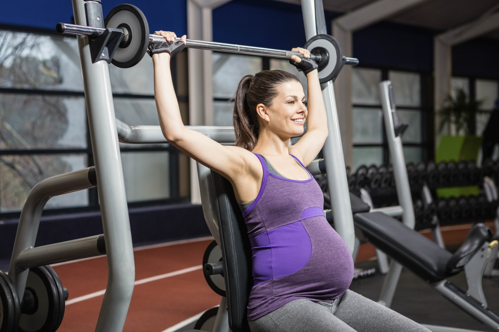

5 SENAMAN TERBAIK UNTUK IBU HAMIL🚶♀️🧘🏼♀️🏊♀️
Manfaat Senaman Ibu Mengandung
- Ia merupakan amalan yang dapat membantu ibu hamil untuk lebih bersedia dan tenang ketika berhadapan kontraksi awal. Selain itu, senaman juga membantu memudahkan proses bersalin.Setiap pergerakan senaman ibu mengandung membantu menjadikan badan dan otot lebih kuat.
- Bukan itu sahaja, wanita mengandung yang kerap bersenam juga dapat mengekalkan tahap kesihatan mereka sepanjang tempoh kehamilan1.Ini kerana, senaman yang dilakukan dapat mengurangkan risiko masalah kesihatan lain seperti sembelit, sakit tulang belakang dan keletihan.
- Masalah-masalah ini merupakan antara simptom biasa bagi ibu yang sedang hamil.Namun, berapa lamakah tempoh yang sesuai untuk melakukan senaman ibu hamil? Menurut American College of Obstetricians and Gynecologists (ACOG), ibu mengandung digalakkan untuk melakukan senaman berintensiti sederhana sekurang-kurangnya 30 minit atau lebih setiap hari.
Senaman Ibu Mengandung Yang Mudah Dan Selamat
Secara umumnya, bukan semua jenis senaman sesuai dilakukan oleh wanita yang berbadan dua.Apa pun, sebelum anda mula melakukan sebarang aktiviti fizikal, sebaiknya dapatkan pemeriksaan dan nasihat doktor terlebih dahulu. Ini bagi menentukan bahawa aktiviti pilihan anda tersebut adalah selamat dan sesuai dengan keadaan semasa tubuh.Perlu diingat, matlamat senaman ibu hamil ini adalah untuk menjaga dan mengekalkan tahap kesihatan yang baik. Berikut adalah lima jenis senaman yang sesuai untuk mereka yang sedang hamil.
1.BERJALAN KAKI🚶♀️
Berjalan kaki merupakan aktiviti senaman ibu mengandung yang paling mudah untuk dilakukan dalam memenuhi jadual kesibukan harian anda sepanjang tempoh kehamilan2.Lebih menarik, senaman berjalan boleh diteruskan sehingga tibanya tarikh jangkaan bersalin. Bahkan pada hari bersalin juga, ia dapat membantu mengurangkan kesakitan kontraksi.Sekiranya anda tidak pernah melakukan sebarang senaman sepanjang hidup, berjalan di sekitar kawasan perumahan adalah cara terbaik untuk memulakannya.Dengan berjalan, anda dianggap melakukan senaman kardiovaskular tanpa memberikan impak yang banyak pada lutut dan pergelangan kaki.Lebih menarik mengenai senaman ini, anda tidak memerlukan sebarang peralatan khas atau keahlian gimnasium tertentu. Apa yang anda perlu hanyalah kasut yang selesa.Jika memilih berjalan di taman, sentiasa berhati-hati dengan permukaan jalan seperti jalan berlubang atau sebarang halangan lain.

2.YOGA🧘🏼♀️
Yoga adalah aktiviti senaman ibu mengandung paling ideal untuk dilakukan3.Ia menggalakkan ketenangan, fleksibiliti, fokus dan pernafasan secara mendalam. Ini merupakan aspek yang baik untuk proses bersalin nanti.Anda boleh menyertai kelas khas yang memfokuskan senaman untuk ibu hamil. Anda juga boleh meminta pengajar yoga mengubah suai posisi yang perlu dilakukan agar bersesuaian dan selamat dengan keadaan anda. Sepanjang tempoh mengandung ini, hindari sebarang posisi yoga yang mencabar keseimbangan tubuh. Sekiranya anda berada pada trimester kedua, elakkan sebarang posisi atau teknik yoga yang memerlukan anda berbaring secara terlentang. Ini kerana, rahim anda lebih berat dan boleh memberikan tekanan berlebihan pada urat utama dan mengurangkan aliran darah ke jantung.Pastikan juga anda tidak melakukan teknik regangan yang berlebihan!

3.BERENANG
Berenang juga dikatakan sebagai senaman ibu hamil yang bagus. Kenapa? Ini kerana, semasa berada di dalam air, berat tubuh menjadi lebih ringan berbanding di darat. Ini sekali gus membuatkan anda berasa lebih ringan dan tangkas bergerak.Berenang di dalam kolam juga dipercayai dapat melegakan loya, kesakitan siatika (sciatic pain) dan pergelangan kaki yang bengkak. Bersenam di dalam air boleh membuatkan pergerakan anda lebih baik tanpa memberikan tekanan pada sendi.Namun, sentiasa berwaspada dengan permukaan lantai yang licin di tepi kolam.Untuk masuk ke dalam kolam, ibu hamil disarankan untuk melangkah atau meluncurkan badan ke dalam air berbanding menyelam atau melakukan lompatan.Anda juga perlu menghindari kolam dengan suhu tinggi atau spa.

4.KELAS AEROBIK
Kelas senaman tarian atau senamrobik berintensiti rendah seperti zumba, adalah kaedah terbaik untuk meningkatkan degupan jantung dan aliran endorfin. Ia sangat sesuai untuk individu yang pertama kali bersenam.Apabila perut anda semakin membesar, elakkan sebarang pergerakan yang boleh mengganggu keseimbangan badan.Walaupun anda mungkin atlet yang berpengalaman, beri perhatian kepada bahasa badan anda dengan mengelakkan gerakan berimpak tinggi dan jangan bersenam sehingga terlalu letih.Jika anda masih baru dalam dunia senamrobik, maklumkan kepada pengajar bahawa anda hamil dan mulakan sesi senaman selama 15 minit sebanyak tiga kali seminggu.Tingkatkan tempoh secara beransur-ansur sehingga mencapai had maksimum 30 minit untuk empat kali sesi senaman seminggu.

5.LATIHAN ANGKAT BERAT🏋🏻♀️
Siapa kata angkat berat bukanlah satu aktiviti senaman ibu mengandung? Hakikatnya, latihan angkat berat ini adalah senaman terbaik untuk mempersiapkan badan setelah bersalin nanti.Di samping itu, latihan ini turut membantu mengatasi risiko kecederaan semasa kehamilan dengan menguatkan otot-otot di sekitar sendi anda7.Namun perlu juga diingat,jika anda tidak pernah melakukan senaman angkat berat sebelum hamil, jangan sesekali melakukan aktiviti ini!Tetapi sekiranya sudah biasa dengan senaman ini sebelum hamil, anda boleh meneruskannya. Senaman ini sebenarnya dapat menyediakan diri untuk sebarang keperluan fizikal semasa prosedur kelahiran nanti.
Ibu-Ibu Mengandung Jangan Lupa Untuk Bersenam Ya🥰